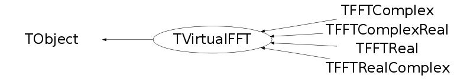

class TVirtualFFT: public TObject
TVirtualFFT TVirtualFFT is an interface class for Fast Fourier Transforms. The default FFT library is FFTW. To use it, FFTW3 library should already be installed, and ROOT should be have fftw3 module enabled, with the directories of fftw3 include file and library specified (see installation instructions). Function SetDefaultFFT() allows to change the default library. Available transform types: FFT: - "C2CFORWARD" - a complex input/output discrete Fourier transform (DFT) in one or more dimensions, -1 in the exponent - "C2CBACKWARD"- a complex input/output discrete Fourier transform (DFT) in one or more dimensions, +1 in the exponent - "R2C" - a real-input/complex-output discrete Fourier transform (DFT) in one or more dimensions, - "C2R" - inverse transforms to "R2C", taking complex input (storing the non-redundant half of a logically Hermitian array) to real output - "R2HC" - a real-input DFT with output in ¡Èhalfcomplex¡É format, i.e. real and imaginary parts for a transform of size n stored as r0, r1, r2, ..., rn/2, i(n+1)/2-1, ..., i2, i1 - "HC2R" - computes the reverse of FFTW_R2HC, above - "DHT" - computes a discrete Hartley transform Sine/cosine transforms: Different types of transforms are specified by parameter kind of the SineCosine() static function. 4 different kinds of sine and cosine transforms are available DCT-I (REDFT00 in FFTW3 notation)- kind=0 DCT-II (REDFT01 in FFTW3 notation)- kind=1 DCT-III(REDFT10 in FFTW3 notation)- kind=2 DCT-IV (REDFT11 in FFTW3 notation)- kind=3 DST-I (RODFT00 in FFTW3 notation)- kind=4 DST-II (RODFT01 in FFTW3 notation)- kind=5 DST-III(RODFT10 in FFTW3 notation)- kind=6 DST-IV (RODFT11 in FFTW3 notation)- kind=7 Formulas and detailed descriptions can be found in the chapter "What FFTW really computes" of the FFTW manual NOTE: FFTW computes unnormalized transforms, so doing a transform, followed by its inverse will give the original array, multiplied by normalization constant (transform size(N) for FFT, 2*(N-1) for DCT-I, 2*(N+1) for DST-I, 2*N for other sine/cosine transforms) How to use it: Call to the static function FFT returns a pointer to a fast fourier transform with requested parameters. Call to the static function SineCosine returns a pointer to a sine or cosine transform with requested parameters. Example: { Int_t N = 10; Double_t *in = new Double_t[N]; TVirtualFFT *fftr2c = TVirtualFFT::FFT(1, &N, "R2C"); fftr2c->SetPoints(in); fftr2c->Transform(); Double_t re, im; for (Int_t i=0; i<N; i++) fftr2c->GetPointComplex(i, re, im); fftr2c->SetPoints(in2); fftr2c->SetPoints(in3); } Different options are explained in the function comments
Function Members (Methods)
This is an abstract class, constructors will not be documented.
Look at the header to check for available constructors.
public:
| virtual | ~TVirtualFFT() |
| void | TObject::AbstractMethod(const char* method) const |
| virtual void | TObject::AppendPad(Option_t* option = "") |
| virtual void | TObject::Browse(TBrowser* b) |
| static TClass* | Class() |
| virtual const char* | TObject::ClassName() const |
| virtual void | TObject::Clear(Option_t* = "") |
| virtual TObject* | TObject::Clone(const char* newname = "") const |
| virtual Int_t | TObject::Compare(const TObject* obj) const |
| virtual void | TObject::Copy(TObject& object) const |
| virtual void | TObject::Delete(Option_t* option = "")MENU |
| virtual Int_t | TObject::DistancetoPrimitive(Int_t px, Int_t py) |
| virtual void | TObject::Draw(Option_t* option = "") |
| virtual void | TObject::DrawClass() constMENU |
| virtual TObject* | TObject::DrawClone(Option_t* option = "") constMENU |
| virtual void | TObject::Dump() constMENU |
| virtual void | TObject::Error(const char* method, const char* msgfmt) const |
| virtual void | TObject::Execute(const char* method, const char* params, Int_t* error = 0) |
| virtual void | TObject::Execute(TMethod* method, TObjArray* params, Int_t* error = 0) |
| virtual void | TObject::ExecuteEvent(Int_t event, Int_t px, Int_t py) |
| virtual void | TObject::Fatal(const char* method, const char* msgfmt) const |
| static TVirtualFFT* | FFT(Int_t ndim, Int_t* n, Option_t* option) |
| virtual TObject* | TObject::FindObject(const char* name) const |
| virtual TObject* | TObject::FindObject(const TObject* obj) const |
| static TVirtualFFT* | GetCurrentTransform() |
| static const char* | GetDefaultFFT() |
| virtual Option_t* | TObject::GetDrawOption() const |
| static Long_t | TObject::GetDtorOnly() |
| virtual const char* | TObject::GetIconName() const |
| virtual Int_t* | GetN() const |
| virtual const char* | TObject::GetName() const |
| virtual Int_t | GetNdim() const |
| virtual char* | TObject::GetObjectInfo(Int_t px, Int_t py) const |
| static Bool_t | TObject::GetObjectStat() |
| virtual Option_t* | TObject::GetOption() const |
| virtual void | GetPointComplex(Int_t ipoint, Double_t& re, Double_t& im, Bool_t fromInput = kFALSE) const |
| virtual void | GetPointComplex(const Int_t* ipoint, Double_t& re, Double_t& im, Bool_t fromInput = kFALSE) const |
| virtual Double_t | GetPointReal(Int_t ipoint, Bool_t fromInput = kFALSE) const |
| virtual Double_t | GetPointReal(const Int_t* ipoint, Bool_t fromInput = kFALSE) const |
| virtual void | GetPoints(Double_t* data, Bool_t fromInput = kFALSE) const |
| virtual void | GetPointsComplex(Double_t* data, Bool_t fromInput = kFALSE) const |
| virtual void | GetPointsComplex(Double_t* re, Double_t* im, Bool_t fromInput = kFALSE) const |
| virtual Double_t* | GetPointsReal(Bool_t fromInput = kFALSE) const |
| virtual Int_t | GetSign() const |
| virtual const char* | TObject::GetTitle() const |
| virtual Option_t* | GetTransformFlag() const |
| virtual Option_t* | GetType() const |
| virtual UInt_t | TObject::GetUniqueID() const |
| virtual Bool_t | TObject::HandleTimer(TTimer* timer) |
| virtual ULong_t | TObject::Hash() const |
| virtual void | TObject::Info(const char* method, const char* msgfmt) const |
| virtual Bool_t | TObject::InheritsFrom(const char* classname) const |
| virtual Bool_t | TObject::InheritsFrom(const TClass* cl) const |
| virtual void | Init(Option_t* flag, Int_t sign, const Int_t* kind) |
| virtual void | TObject::Inspect() constMENU |
| void | TObject::InvertBit(UInt_t f) |
| virtual TClass* | IsA() const |
| virtual Bool_t | TObject::IsEqual(const TObject* obj) const |
| virtual Bool_t | TObject::IsFolder() const |
| virtual Bool_t | IsInplace() const |
| Bool_t | TObject::IsOnHeap() const |
| virtual Bool_t | TObject::IsSortable() const |
| Bool_t | TObject::IsZombie() const |
| virtual void | TObject::ls(Option_t* option = "") const |
| void | TObject::MayNotUse(const char* method) const |
| virtual Bool_t | TObject::Notify() |
| void | TObject::Obsolete(const char* method, const char* asOfVers, const char* removedFromVers) const |
| static void | TObject::operator delete(void* ptr) |
| static void | TObject::operator delete(void* ptr, void* vp) |
| static void | TObject::operator delete[](void* ptr) |
| static void | TObject::operator delete[](void* ptr, void* vp) |
| void* | TObject::operator new(size_t sz) |
| void* | TObject::operator new(size_t sz, void* vp) |
| void* | TObject::operator new[](size_t sz) |
| void* | TObject::operator new[](size_t sz, void* vp) |
| TVirtualFFT& | operator=(const TVirtualFFT&) |
| virtual void | TObject::Paint(Option_t* option = "") |
| virtual void | TObject::Pop() |
| virtual void | TObject::Print(Option_t* option = "") const |
| virtual Int_t | TObject::Read(const char* name) |
| virtual void | TObject::RecursiveRemove(TObject* obj) |
| void | TObject::ResetBit(UInt_t f) |
| virtual void | TObject::SaveAs(const char* filename = "", Option_t* option = "") constMENU |
| virtual void | TObject::SavePrimitive(ostream& out, Option_t* option = "") |
| void | TObject::SetBit(UInt_t f) |
| void | TObject::SetBit(UInt_t f, Bool_t set) |
| static void | SetDefaultFFT(const char* name = "") |
| virtual void | TObject::SetDrawOption(Option_t* option = "")MENU |
| static void | TObject::SetDtorOnly(void* obj) |
| static void | TObject::SetObjectStat(Bool_t stat) |
| virtual void | SetPoint(Int_t ipoint, Double_t re, Double_t im = 0) |
| virtual void | SetPoint(const Int_t* ipoint, Double_t re, Double_t im = 0) |
| virtual void | SetPointComplex(Int_t ipoint, TComplex& c) |
| virtual void | SetPoints(const Double_t* data) |
| virtual void | SetPointsComplex(const Double_t* re, const Double_t* im) |
| static void | SetTransform(TVirtualFFT* fft) |
| virtual void | TObject::SetUniqueID(UInt_t uid) |
| virtual void | ShowMembers(TMemberInspector& insp) |
| static TVirtualFFT* | SineCosine(Int_t ndim, Int_t* n, Int_t* r2rkind, Option_t* option) |
| virtual void | Streamer(TBuffer& b) |
| void | StreamerNVirtual(TBuffer& b) |
| virtual void | TObject::SysError(const char* method, const char* msgfmt) const |
| Bool_t | TObject::TestBit(UInt_t f) const |
| Int_t | TObject::TestBits(UInt_t f) const |
| virtual void | Transform() |
| virtual void | TObject::UseCurrentStyle() |
| virtual void | TObject::Warning(const char* method, const char* msgfmt) const |
| virtual Int_t | TObject::Write(const char* name = 0, Int_t option = 0, Int_t bufsize = 0) |
| virtual Int_t | TObject::Write(const char* name = 0, Int_t option = 0, Int_t bufsize = 0) const |
protected:
| virtual void | TObject::DoError(int level, const char* location, const char* fmt, va_list va) const |
| void | TObject::MakeZombie() |
Data Members
public:
| enum TObject::EStatusBits { | kCanDelete | |
| kMustCleanup | ||
| kObjInCanvas | ||
| kIsReferenced | ||
| kHasUUID | ||
| kCannotPick | ||
| kNoContextMenu | ||
| kInvalidObject | ||
| }; | ||
| enum TObject::[unnamed] { | kIsOnHeap | |
| kNotDeleted | ||
| kZombie | ||
| kBitMask | ||
| kSingleKey | ||
| kOverwrite | ||
| kWriteDelete | ||
| }; |
protected:
| static TString | fgDefault | default transformer |
| static TVirtualFFT* | fgFFT | current transformer |
Class Charts
{kind=link}
{kind=link}
{kind=link}
{kind=link}

Function documentation
TVirtualFFT* FFT(Int_t ndim, Int_t* n, Option_t* option)
Returns a pointer to the FFT of requested size and type. Parameters: -ndim : number of transform dimensions -n : sizes of each dimension (an array at least ndim long) -option : consists of 3 parts - flag option and an option to create a new TVirtualFFT 1) transform type option: Available transform types are: C2CForward, C2CBackward, C2R, R2C, R2HC, HC2R, DHT see class description for details 2) flag option: choosing how much time should be spent in planning the transform: Possible options: "ES" (from "estimate") - no time in preparing the transform, but probably sub-optimal performance "M" (from "measure") - some time spend in finding the optimal way to do the transform "P" (from "patient") - more time spend in finding the optimal way to do the transform "EX" (from "exhaustive") - the most optimal way is found This option should be chosen depending on how many transforms of the same size and type are going to be done. Planning is only done once, for the first transform of this size and type. 3) option allowing to choose between the global fgFFT and a new TVirtualFFT object "" - default, changes and returns the global fgFFT variable "K" (from "keep")- without touching the global fgFFT, creates and returns a new TVirtualFFT*. User is then responsible for deleting it. Examples of valid options: "R2C ES K", "C2CF M", "DHT P K", etc.
TVirtualFFT* SineCosine(Int_t ndim, Int_t* n, Int_t* r2rkind, Option_t* option)
Returns a pointer to a sine or cosine transform of requested size and kind Parameters: -ndim : number of transform dimensions -n : sizes of each dimension (an array at least ndim long) -r2rkind : transform kind for each dimension 4 different kinds of sine and cosine transforms are available DCT-I - kind=0 DCT-II - kind=1 DCT-III - kind=2 DCT-IV - kind=3 DST-I - kind=4 DST-II - kind=5 DST-III - kind=6 DST-IV - kind=7 -option : consists of 2 parts - flag option and an option to create a new TVirtualFFT - flag option: choosing how much time should be spent in planning the transform: Possible options: "ES" (from "estimate") - no time in preparing the transform, but probably sub-optimal performance "M" (from "measure") - some time spend in finding the optimal way to do the transform "P" (from "patient") - more time spend in finding the optimal way to do the transform "EX" (from "exhaustive") - the most optimal way is found This option should be chosen depending on how many transforms of the same size and type are going to be done. Planning is only done once, for the first transform of this size and type. - option allowing to choose between the global fgFFT and a new TVirtualFFT object "" - default, changes and returns the global fgFFT variable "K" (from "keep")- without touching the global fgFFT, creates and returns a new TVirtualFFT*. User is then responsible for deleting it. Examples of valid options: "ES K", "EX", etc
Option_t * GetTransformFlag() const
Double_t GetPointReal(Int_t ipoint, Bool_t fromInput = kFALSE) const
Double_t GetPointReal(const Int_t* ipoint, Bool_t fromInput = kFALSE) const
void GetPointComplex(const Int_t* ipoint, Double_t& re, Double_t& im, Bool_t fromInput = kFALSE) const
Double_t* GetPointsReal(Bool_t fromInput = kFALSE) const
void GetPointsComplex(Double_t* re, Double_t* im, Bool_t fromInput = kFALSE) const
void GetPointsComplex(Double_t* data, Bool_t fromInput = kFALSE) const
void SetPointComplex(Int_t ipoint, TComplex& c)
void SetPointsComplex(const Double_t* re, const Double_t* im)
void Transform()